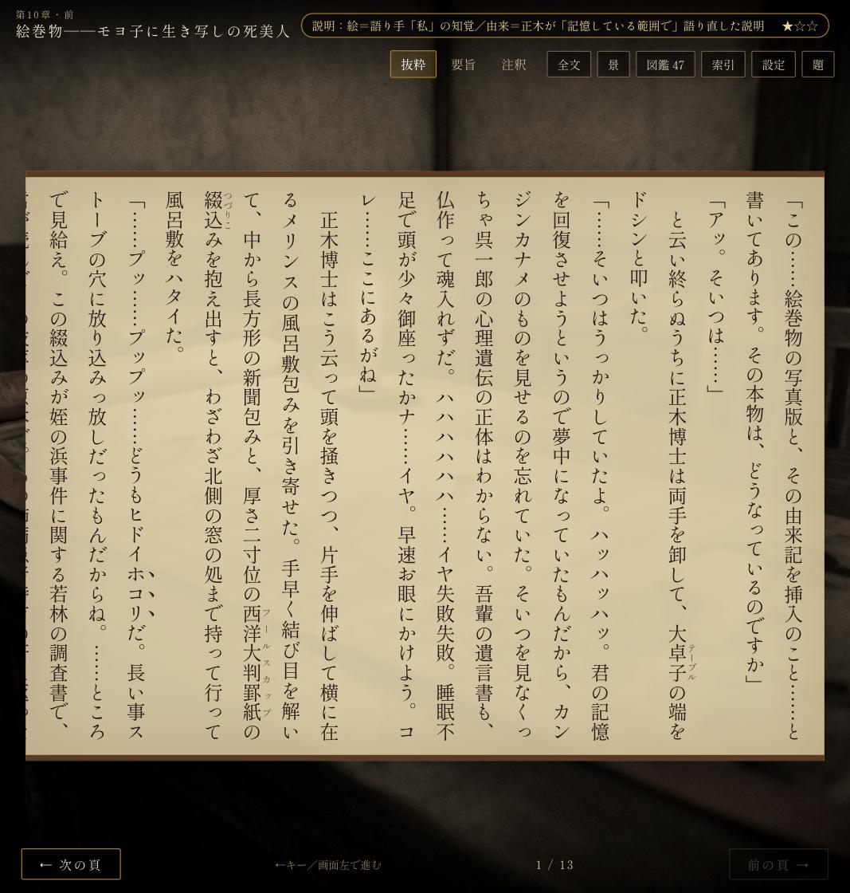
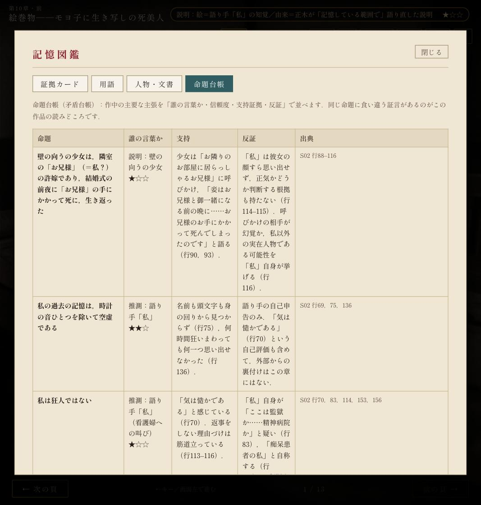
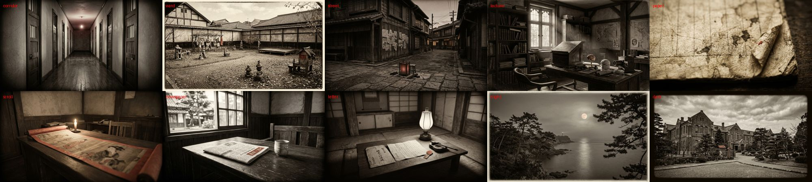

公開先：https://sayonari.github.io/dogra-magra-game/（commit 22f159c 以降）．ご指示「良いと思います．なので開発を進めてください！」に基づき，M2（全13区分の通しプレイ）を完成させました．
| 項目 | 内容 |
|---|---|
| 章データ | 14 ファイル（S01〜S13，S11 は前半・後半）／69 場面．各場面に原文抜粋（行範囲指定）・要旨・三時点注釈（大正15年作中／昭和10年刊行／現代）・情報源（種別・誰・信頼度★） |
| 証拠カード | 47 枚（作中の主張と現代医学の注記を分離） |
| 理解課題 | 13 章分（各4〜6問）．全問正解で「つづける」，誤答のままでも「解説を読んで進む」逃げ道あり．選択肢は表示のたびにシャッフル（終章の正解がすべて先頭だったため） |
| 記憶図鑑 | 証拠カード／用語／人物・文書／命題台帳（誰の言葉か・信頼度・支持・反証・出典行，全 67 命題） |
| 原文全文モード | 索引または「全文」ボタンから区分の原文を最初から頁送りで読める．閲覧行は「原文100%」バッジに反映 |
| 3 バッジ | 物語版（全場面到達）／論点版（全13課題達成）／原文100%（非空 2,959 行の閲覧率）＋周回数 |
| 作中文書の入れ子 | 階層インジケータ（入れ子 1・2）と紙の段積み影，文書種別ごとの紙（新聞・手紙・絵巻） |
| ミニゲーム | 電話交換局（S07）は実装済み．外道祭文／狂人当て／十月十日／絵巻物／助手モード／対審は要旨表示の代替パネル（M4 で実装）．終章は三説の選択→時計音→タイトル |
| 背景 | Nano Banana で 10 枚追加生成（廊下・解放治療場・街角・教授室・古紙・絵巻・新聞・手紙・夜の海・病院外観） |
analysis/verify_scenario.py で全 14 ファイル OK（引用は原文と一字一句一致，行範囲・正解番号・引用外の「、。」もゼロ）．型検査も通過14 件の指摘のうち 12 件を反映しました（analysis/reviews/codex_review_m2_engine.md）．主なもの：場面遷移の await 漏れ（連打で二重イベント）／要旨タブでのキー暴発／保存値の実行時検証（壊れた localStorage でも起動）／ResizeObserver の解放／ダイアログの role・Escape・フォーカス復帰／終幕後タイマーの管理．未対応 2 件（保存失敗の通知，課題のラジオボタン化）は TODO に残しました．
絵巻物の場面（S11a-5，絵巻の紙）：

記憶図鑑・命題台帳：

生成した背景 10 枚：

記録：.spec/TODO.md，.spec/KNOWLEDGE.md，.agent/handoff/HANDOFF.md を更新．Drive 正本へ同期済み．